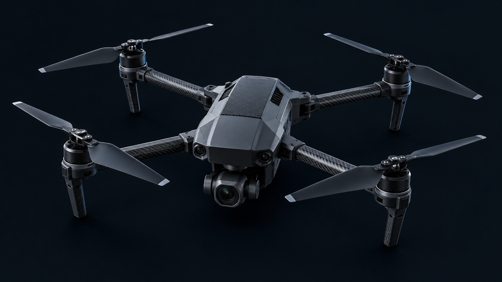

LEAF / FLIGHT · PRECISION STARTS WITH EVIDENCE
See the leaf.
Understand the next step.
A local-first inspection station for tomato health. Connect a camera, review the evidence, and explore a safe treatment simulation.

LEAF FLIGHT / GROUND STATION
Drone-based plant monitoring.
Power on. Frame a leaf. Capture and inspect.
01 / VISUAL MONITORING
Camera monitor
Ready for your next inspection
Choose a camera source, then select Drone ON.
Wait for live video, then frame one tomato leaf.
Uses your phone rear camera when available, or your laptop camera.
Select your drone receiver or capture device. Camera names may require permission first.
Your drone stream must reach a compatible adapter first. RTSP, RTMP and proprietary drone apps do not connect directly. Connection setup guide
Disconnected
Waiting for camera permission…
The model analyzes this still image, not the moving camera feed.
Frame one leaf in good light. Use a close-up, not a wide aerial field photo.
Leaf check required before disease analysis
The first leaf check downloads an additional model (about 154 MB). Images are checked on this device. Uncertain inputs are rejected.
SESSION / SNAPSHOTS
Recent images 0
Your captured and uploaded images appear here as you inspect them.
02 / CLASSIFICATION
Leaf classification
Awaiting analysis
Your image’s closest match and all three class scores will appear here.
CLOSEST TRAINED CLASS
The highest score is below 50%. The model has no strong preference among its three classes. Try a clearer photo.
How to read this result
The largest of the three scores determines the displayed class.
This is not the percentage of the leaf that is infected. It is not disease severity or a guaranteed probability that the diagnosis is correct.
- Mission
- Leaf inspection
- Plant reference
- Not provided
- Image
- —
A separate input check rejects non-leaf and uncertain photos before disease classification. It can still make mistakes and does not certify the plant species. Use tomato leaves only; other diseases are outside this model’s three classes.
03 / REVIEW & SIMULATION
From inspection to a careful decision.
Separate the model’s confidence from the visible extent of disease.
SEVERITY WORKFLOW
Evidence before action.
Analyze a tomato leaf to connect its prediction here.
This site does not generate segmentation. Import two binary PNG masks for this exact photo, at its original dimensions: white = included pixels, black/transparent = background. Disease pixels must be inside the visible-leaf mask.
Operator-entered source metadata; not a score generated by this site. Minimum required: 80%.
No segmentation available.
View severity & simulation rules
| Visible leaf affected | Band | Simulation |
|---|---|---|
| 0% | Healthy | 0 s · no spray |
| >0–5% | Very low | 0 s · review |
| >5–10% | Low | 2 s |
| >10–25% | Medium | 5 s |
| >25–50% | High | 8 s + agronomist review |
| >50% | Critical | 0 s · manual review |
Severity = diseased leaf pixels ÷ visible leaf pixels × 100. Disease confidence is never used as infected area. Invalid images, quality failures, disease confidence below 80%, or missing/unreliable segmentation block spray simulation.
CONNECTED ASSESSMENT
Awaiting leaf
— confidence- Severity mode
- Phase 1
- Severity band
- Not measured
- Segmented visible area affected
- Manual-review status
- Required
- Agronomist-review status
- Not triggered
simulated duration only
No simulated spray. Analyze a leaf and review the result.
No simulation running.
Simulation only. This duration is not a pesticide dose or real hardware command.
WATER / TANK STATUS
Know your reserve.
Unknown · no tank sensor connected.
Manual input only. The display is not live telemetry. No flow rate, dose, mixing ratio or application rate is calculated. Running the animation does not consume or estimate real water.
LOCAL & PRIVATEMasks, photos and inputs stay in this tab. Changing the image or assessment stops the simulation and clears confirmation.
Understand the model and its limits
What happens during analysis?
Drone ON connects the selected camera source. Local cameras require permission; network mode contacts only the configured video adapter. It never falls back to a phone camera. Capture image selects a still photo while keeping the live camera running. Drone OFF disconnects the video source. Lost or stalled feeds stop capture. Your photo first passes a separate semantic leaf check. Non-leaf, ambiguous and unverified inputs do not receive disease scores. Accepted photos are decoded as RGB and resized to 224 × 224. The trained model returns three scores. The class with the largest score is displayed. Camera photos use exactly the same prediction process as uploads.
The framing overlay is only a visual guide. It does not locate lesions, measure infected area, or crop your photo.
What has actually been measured?
The field-fine-tuned model achieved 94.81% accuracy on 424 reserved PlantVillage images and 78.57% on 28 reserved PlantDoc images. The field test is small, so its result is preliminary. These test images were not used for training or checkpoint selection. Dataset accuracy does not describe the certainty of an individual prediction.
The model was fine-tuned using additional labelled field images. These dataset results do not establish accuracy on your farm or drone. Scores are uncalibrated and high scores can still be wrong. Only three tomato classes are supported. Speed depends on your device.
What is virtual here?
The drone artwork represents a monitoring station. You can use your device camera, an explicitly selected capture device, or a physical-drone video stream through a compatible WHEP adapter. The website does not fly, power on, or power off a physical drone. There is no GPS or battery telemetry. Proprietary drones need a compatible video output or manufacturer integration; universal support is not claimed.
Mission inputs are your own notes. They do not affect model scores. The model does not provide pesticide or treatment prescriptions.